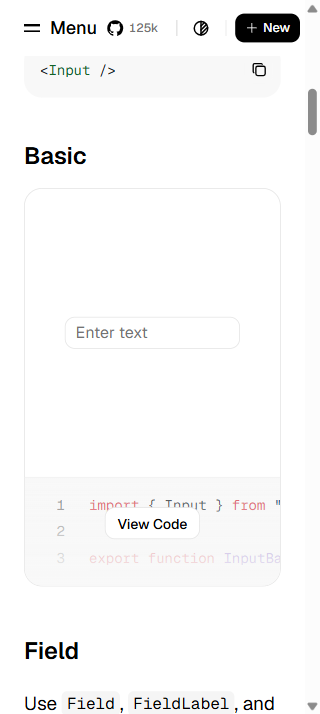
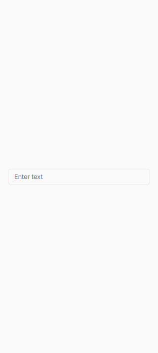

Matched desktop viewport: 1046×714 CSS pixels. The reference is the live shadcn Basic text input; Strata is its isolated Storybook Default story. The comparison preserves Strata tokens and product theming.
shadcn at 320px — 175.2×32px in its documentation content column

Strata at 320px — 288×32px with 16px side gutters

Observed fit
Both desktop controls are 320×32px. Strata uses its approved Inter typography, semantic colors and 6px radius; shadcn uses Geist and a 10px radius. Those theme differences are intentional.
At 320px the reference field is constrained by its docs navigation/content layout; the isolated Strata frame uses the available 288px width. Both pages fit without horizontal document overflow.
One Tab press focuses the Strata textbox and shows its primary 1.6px focus outline. Focus exit, screen-reader output, OS accessibility modes and true 200% browser zoom remain unverified.